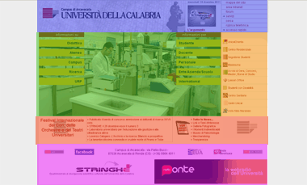

Home Page
Ordinata
Visibile in una schermata
Barre laterali vuote

visita la HomePage reale
Legenda
Verde = aspetto positivo
Rosso = aspetto negativo
Descrizione
Header
logo e nome
VISIBILE
menu con servizi semplici
SEMPLICE E DIRETTO
Main
galleria automatica in dissolvenza
DISTURBA UN PO' L'EFFETTO DISSOLVENZA
contenuti del sito a dx e sx della foto centrale
DIRETTO
Sidebar dx
servizi interni e rispettivo collegamento ai link
SEMPLICE E INTUIBILE
Under
Notizie dell'Ateneo e note
NOTIZIE INTERESSANTI E MENO
Footer
Contatti e collegamento
POCHI E NON DISTURBANO
WebRadio